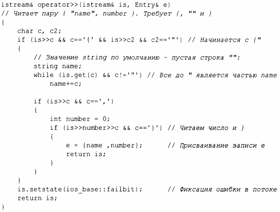

⇐10.4 Состояние ввода-вывода 10.6 Форматирование⇒
В дополнение к вводу-выводу встроенных типов и стандартных строк string библиотека iostream позволяет программистам определять вводвывод для собственных типов. Например, рассмотрим простой тип Entry, который мы могли бы использовать для представления записей в телефонной книге:
Мы можем легко определить простой оператор вывода для записи Entry с использованием формата {"имя",но.wер}:
Пользовательский оператор вывода получает поток вывода (по ссылке) в качестве первого аргумента и возвращает его как результат.
Соответствующий оператор ввода более сложный, потому что он должен проверять корректность форматирования и обрабатывать ошибки:
Операция ввода возвращает ссылку на ее поток is tream, которая может быть использована для проверки успеха операции. Например, при использовании в качестве условия is>>c означает "Удалось ли считать символ из is в с?"
По умолчанию is>>c пропускает пробельные символы, чего не делает is. get (с), поэтому оператор ввода для Entry игнорирует (опускает) пробелы вне строки имени, но не внутри самого имени. Например:
Мы можем читать такие пары значений из входного потока в Entry, наr~ример, следующим образом:
Вывод будет следующим:
В §9.4 приведено описание более систематического метода распознавания шаблонов в потоках символов (с использованием соответствия регулярным выражениям).